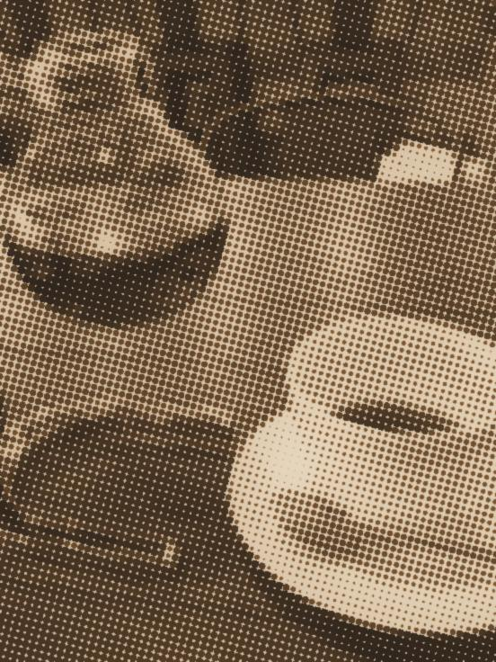
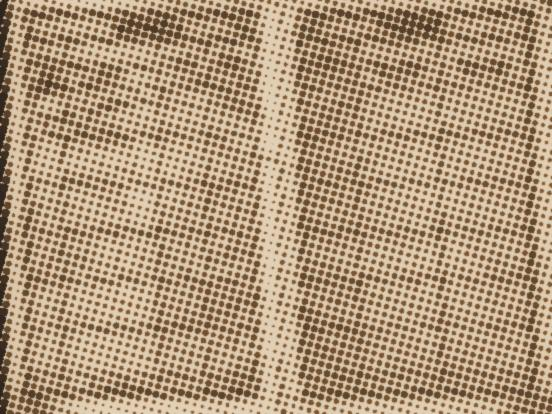
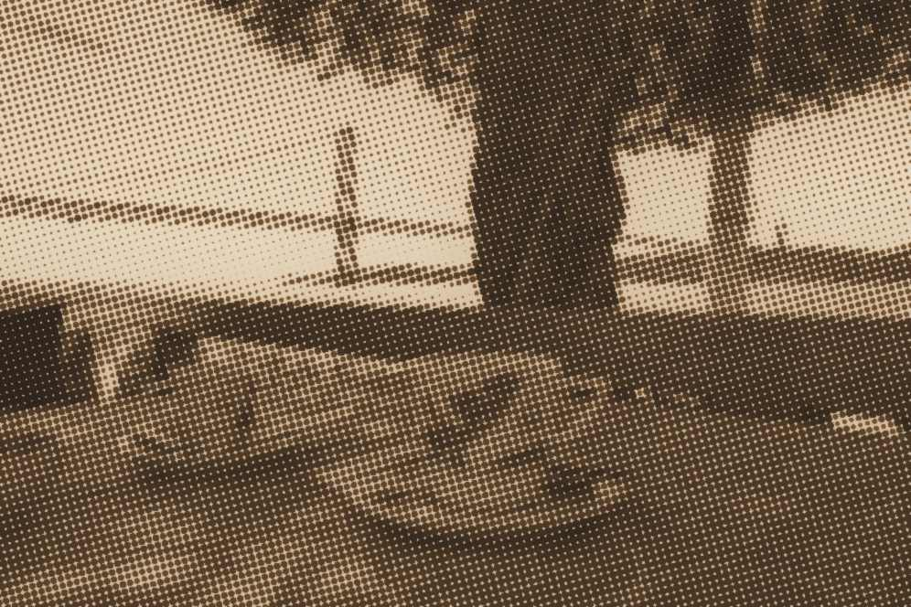
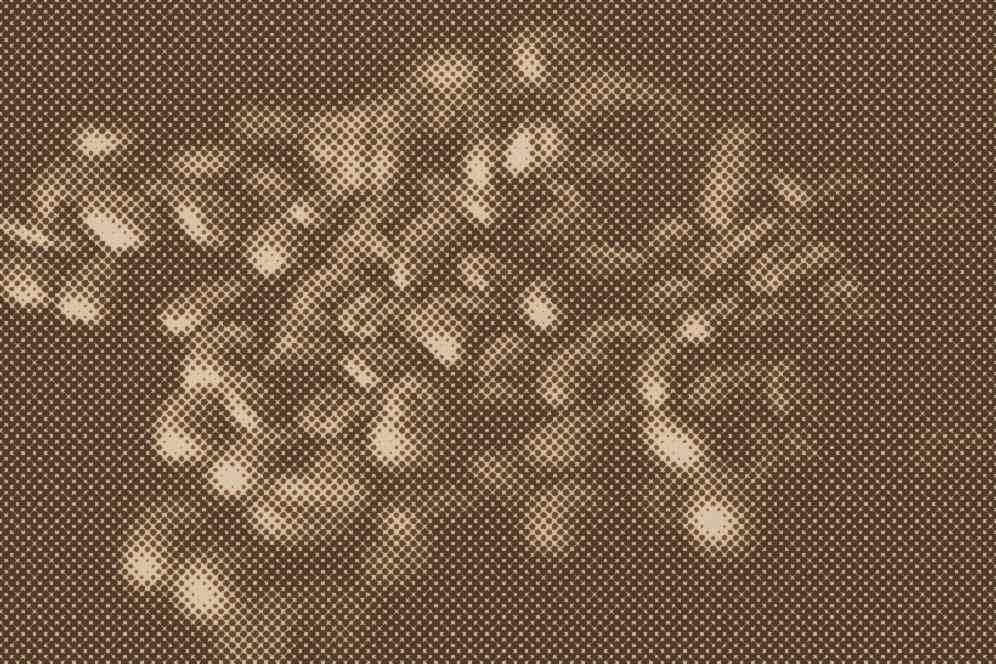

一把用了 17 年的铜壶

壶嘴 1981 年换过一次，焊点还留在壶肩。开档先用它烧 3 升水烫杯，壶底一发青就不再续火；午后两点到四点只烧这一壶，壶身不擦，让水垢自己贴着。
水温 92℃｜粉量 18g｜注水 2 分 10 秒
轨道间距 96px，相邻卡片沿轨道方向的偏移按 0.62 递减。每张卡片的漂移速度系数在 0.92 到 1.08 之间各不相同，前后错动就是这条河的水流。阅读顺序由杯渍最深的那一张给定。

壶嘴 1981 年换过一次，焊点还留在壶肩。开档先用它烧 3 升水烫杯，壶底一发青就不再续火；午后两点到四点只烧这一壶，壶身不擦，让水垢自己贴着。
水温 92℃｜粉量 18g｜注水 2 分 10 秒
上壶裂过两次，都用耐热胶补着。补过的壶出液慢 8 秒，这一栏在账上单列，不并进平均出杯时间。
水温 89℃｜粉量 16g｜注水 1 分 50 秒
1974 年的磨，刻度盘缺一颗螺钉，用铜丝绑住。18 克豆磨 210 圈，粗细刚好压得住 2 分 10 秒。
水温 92℃｜粉量 18g｜研磨 210 圈
唱针 1983 年换过，针压调到 2.0 克。午后两点到四点只放这一面，翻面由第三位客人负责，翻完在账上记一笔。
当日只出手冲，不出冰饮
缺口 6 毫米，落在倒奶那一侧，所以每次只装到 90 毫升。装满了会在缺口处挂一道奶痕，洗起来比多倒一次贵。
奶温 62℃｜每次 90ml
这一页打不开：第 12 期的网点位图在构建时丢了 3 行，错误码 IMG-12-3。先读第 11 期，或者到店里问老板要一份纸质菜单。
IMG-12-3｜缺 3 行｜未印

1979 年起用，一格记一次出杯。第三本记到第 4,180 杯，页角被咖啡渍粘住过两页，撕开时连日期一起带走了。
已记 4,180 杯｜缺 2 页日期
铁夹 1985 年锈断在铰链上，换成樱木的。木夹不留指印，客人用完要放回碟沿那道刻线，放偏了下一杯就是别人的。
夹长 118mm｜樱木｜无漆
棱深 1.2 毫米，滤纸贴上去留出 12 条排气道。注水绕到第 3 圈开始收水，粉层不塌，尾段不带涩。
水温 92℃｜粉量 18g｜绕 3 圈收水
靠墙四席留给单人，吧台四席不拼桌。一位客人平均坐 51 分钟，所以午后两点那一轮，翻不翻台由灶上的壶决定。
八席｜平均 51 分钟｜午后不翻台
写了一半没发出去的稿
写了一半没发出去的稿
写了一半没发出去的稿
这一期还没有新稿。灶上正煮着深焙，二十分钟后再回来看看。
两张原片按珂罗版双色压印：#85572A 与 #241A12 两个墨，60 线连续调网点，边缘 12% 晕染外溢，原稿的划痕与灯罩反光都留着。原稿、授权与来源页列在页脚。


四张线图取自吧台上真正在用的器物。线宽 0.8px、圆头线帽，端点落在 0.5 单位的栅格上；线图只是账页的边注，不指向任何链接，也不做功能图标。
三张网点位图在印前各留了一条记录，按发生的顺序排。第三条到付印时还没修好，所以它留在页面上，没有藏进代码的分支里。
十张卡片的位图、期号与冲泡参数都排进了轨道：第 3 期到第 12 期，合计 4,180 杯。轨道尾端留三张空白卡片，只有杯渍环，不计数、不指向任何页。
这一期还没有新稿。灶上正煮着深焙，二十分钟后再回来看看。
这一页打不开：第 12 期的网点位图在构建时丢了 3 行，错误码 IMG-12-3。先读第 11 期，或者到店里问老板要一份纸质菜单。
缺的是第 12 期第 3 排到第 5 排的网点，补印要先拿回原稿胶片；在那之前，这一期的轨道照旧可以往下漂。
表就是把上面十张卡片摊平了对读：同一支豆，六天里水温差 3℃，出杯时间差 20 秒。
| 期号 | 豆与烘焙 | 水温 | 粉量 | 注水 | 备注 |
|---|---|---|---|---|---|
| 第 12 期 | 巴西喜拉多 · 深焙 | 92℃ | 18g | 2 分 10 秒 | 铜壶换嘴的那一栏 |
| 第 11 期 | 巴西喜拉多 · 深焙 | 89℃ | 16g | 1 分 50 秒 | 补过的上壶，慢 8 秒 |
| 第 10 期 | 哥伦比亚 · 中深焙 | 92℃ | 18g | 2 分 10 秒 | 研磨 210 圈 |
| 第 9 期 | 巴西喜拉多 · 深焙 | 92℃ | 18g | 2 分 10 秒 | 只放同一面黑胶 |
| 第 8 期 | 巴西喜拉多 · 深焙 | 92℃ | 18g | 2 分 10 秒 | 奶温 62℃，每次 90ml |
| 第 7 期 | — | — | — | 未出杯 | 位图缺 3 行，IMG-12-3 |
| 第 6 期 | 哥伦比亚 · 中深焙 | 91℃ | 17g | 2 分 05 秒 | 第三本手写账第 4,180 杯 |
| 第 5 期 | 哥伦比亚 · 中深焙 | 91℃ | 17g | 2 分 05 秒 | 方糖夹换成樱木的 |
| 第 4 期 | 肯尼亚 · 中焙 | 93℃ | 18g | 2 分 00 秒 | 绕到第 3 圈收水 |
| 第 3 期 | 肯尼亚 · 中焙 | 93℃ | 18g | 2 分 00 秒 | 八席，平均坐 51 分钟 |
| 十期合计 · 出杯 4,180 杯，其中第 7 期因网点位图丢失未出杯；六天水温跨度 89–93℃，出杯时间差 20 秒 | |||||